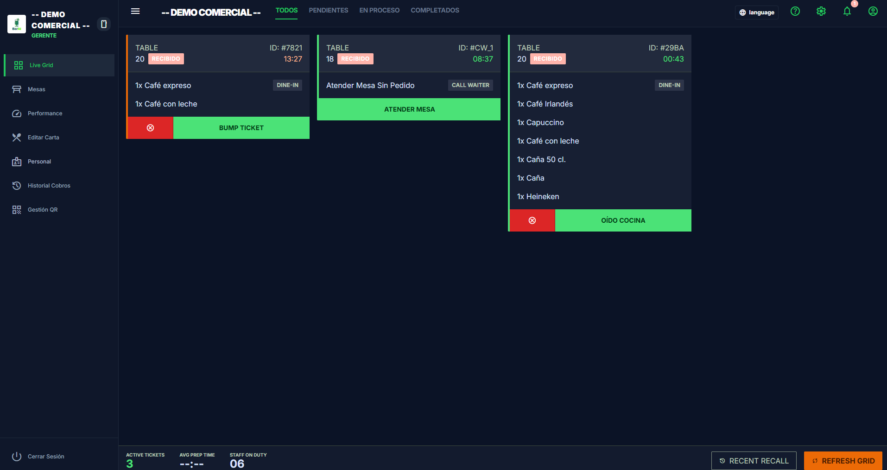
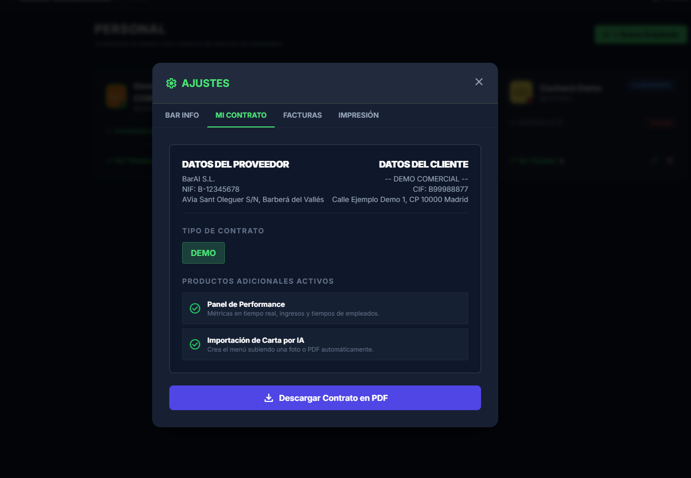
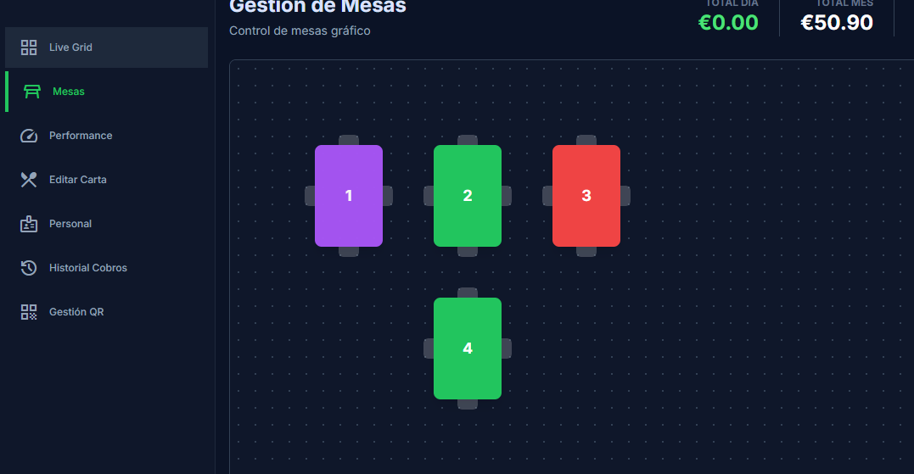

Centro de Ayuda y Guía de Uso Operativa
Guía completa de arquitectura y operativa de BarAI: pedidos en mesa y barra, KDS en cocina, seguridad con PIN, cobro fiscal con IVA 10%, ticket digital con logo, reseñas en Google y SuperAdmin.
1. Acceso de Cliente, Mesa Web y Validación
El comensal accede a la Web App instantánea mediante escaneo de QR físico en mesa o a través de la URL de Mesa Web, sin descargas ni registros obligatorios.
-
Mesa Web (/order/WEB): Canal especial para pedidos en barra o para llevar (Take Away) sin validación de código físico.
-
Validación de Seguridad Modular: El bar puede activar validación por código visual de 3 letras (ej.
M1A) o por proximidad NFC. -
Apertura de Sesión Cifrada: Se asigna un identificador único seguro (
client_token) y la mesa pasa a estado ocupado en tiempo real. -
Llamar al Camarero: Alerta silenciosa directa a sala sin generar pedido ni comanda en cocina.


2. Cocina, KDS y Ciclo de Comandas
Recepción en tiempo real por WebSockets con aviso acústico en cola FIFO y transición de estados limpia para el equipo.
Recibido (Cian): Comanda recién entrada. El cliente aún puede cancelarla desde su móvil si se equivocó.
Preparando (Naranja): El cocinero pulsa "Oído Cocina". Se bloquea de inmediato la cancelación del comensal.
Listo (Verde): El plato está emplatado. Se alerta a sala para su entrega en mesa.
Completado / Servido: Entregado en mesa. Es el único estado computable para el cobro final.
3. Reglas de Cancelación y PIN Maestro de 4 Dígitos
Para erradicar pérdidas de comida y mermas descontroladas, BarAI implementa una doble barrera de seguridad:
El cliente solo puede anular su pedido mientras permanezca en
estado Recibido. En cuanto cocina pulsa "Oído Cocina", el
botón desaparece de su pantalla.
Si un plato que ya está en preparación debe anularse (ej. rotura de stock o error), el sistema exige obligatoriamente el PIN de 4 dígitos del Gerente. El motivo queda registrado en el registro de auditoría.

4. Croquis en Vivo y Regla de Cobro de Mesas
Visualización en tiempo real del estado de cada mesa y liquidación con estricta protección al consumidor:
-
Regla de Cobro Exclusivo: Al pulsar "Cobrar Mesa",
el total suma únicamente los pedidos en estado
Completado(servidos). - Cancelación de Pedidos Huérfanos: Cualquier plato que haya quedado en preparación se anula automáticamente para jamás facturar un plato no consumido.
-
Desglose Oficial de IVA (10% Hostelería España): Todos los
tickets calculan la Base Imponible (
Total / 1.10), Cuota de IVA 10% y Total final conforme a la normativa RD 1619/2012. - Liberación de Mesa: La sesión se cierra, la mesa vuelve al color verde (Libre) y se dispara el ticket digital y la encuesta de satisfacción.

5. Ticket Digital con Logo y Reseñas en Google (15 min)
Ticket Consolidado en PDF con Logo
Si el comensal solicita su ticket, el sistema encola la petición. Al cobrar la mesa,
se despacha un único PDF oficial consolidado con el logotipo del
bar ( con el producto Logo) y desglose fiscal
completo.
El logotipo subido por el Gerente se estampa en el PDF, en el cuerpo del correo, en las invitaciones a reseñas y en el pre-ticket impreso del TPV.
Módulo de Reseñas Google (Antispam)
Si el bar tiene activo el producto de Reviews,
15 minutos después de recibir el ticket el cliente recibe un email
invitándole a valorar el local con 5 estrellas en Google Maps.
Filtro Antispam Estricto: Si el comensal ya recibió esta invitación en una visita anterior a este bar, el sistema lo detecta en base de datos y jamás vuelve a enviársela.
6. Administración, Carta Base con IA y Contratos
Carta Base y Parseo IA
Pobla el catálogo con más de 30 referencias de cervezas (Estrella Damm, Moritz, Voll-Damm), vinos DO y cafés con un clic, o importa cartas físicas mediante Inteligencia Artificial (Gemini).
Upselling Modular con 1 Clic
Si el bar desea activar módulos bloqueados (Performance, Reseñas Google, Validación NFC), dispone de un botón directo para solicitar el alta a administración con sus datos precargados.
Monitor de Inactividad (10m)
Auditoría continua en segundo plano: si una mesa lleva más de 10 minutos abierta sin pedir nada, se marca en rojo en el croquis para que el personal se acerque a atenderla.
7. Herramientas del SuperAdmin (/webadmin)
Panel de supervisión global para la gestión técnica y comercial de toda la red de locales BarAI:
Preguntas Frecuentes y Reglas Operativas
Haz clic en cualquier pregunta para ver el detalle de la regla operativa.
cocinero tiene un filtro estricto que ignora las llamadas
de servicio de sala. Solo los camareros y administradores reciben la alerta para no distraer
la producción en fogones.
WHERE company_id = ? y las conexiones WebSocket están suscritas a salas
privadas (company_<id>), asegurando privacidad absoluta entre locales.
¿Necesitas asistencia técnica personalizada?
Si experimentas alguna incidencia operativa o deseas configurar un nuevo terminal, nuestro equipo de soporte está disponible.
Crear Ticket de Soporte